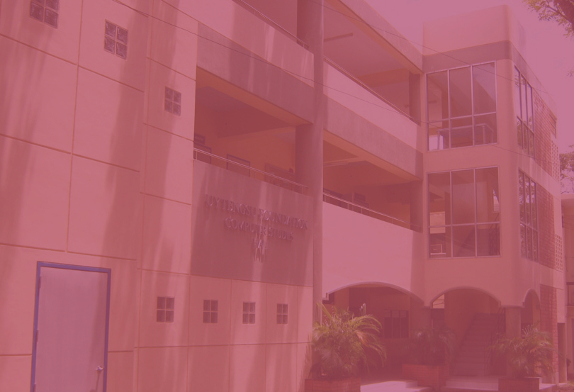

College Of Computer Studies


Asst. Prof. Joy
M. Dy
Dean, College of Computer
Studies at Silliman University
Source:
https://tinyurl.com/3hyy65p7
Silliman
Education's 5Cs
Church , Classroom,
Court,
Culture, Community
Silliman therefore envisions genuine quality Christian education as a result of an interaction of experiences from at least five venues: the classroom, the Church, the cultural center, the (athletic) court, and the community. The classroom is a major component of the “second home” of students.

College of Computer Studies
- • Bachelor of Library and Information Science
- • Bachelor of Science in Computer Science
- • Bachelor of Science in Information Systems
- • Bachelor of Science in Information Technology